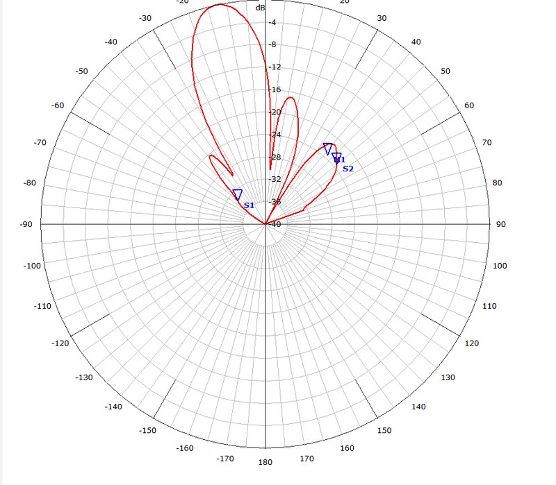
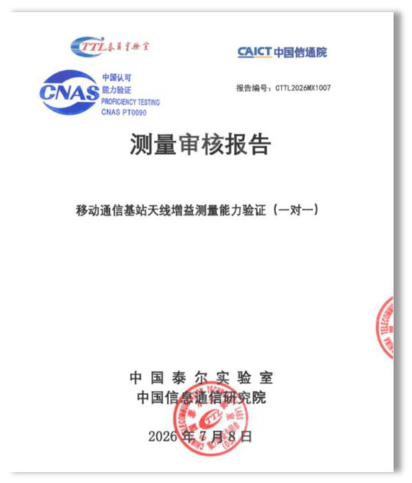

第一次专题调研
2025 年 11 月 22 日至 23 日，中国通信学会专家团队实地调研瑞吉的基站天线快速检测设备，就设备的设计原理、操作流程与检测效能进行现场诊断，并提出设计优化建议。
TTC3000 在近场逐端口采集数据，再由软件计算远场方向图。大型多端口天线在一个紧凑、可移动的暗室里就能完成完整测试。
一体化屏蔽暗室，频率范围 100 MHz 至 8 GHz，无需专门房间。
探头沿天线轴向移动，转台同时转动天线，在天线周围的柱面上完成采样。
自动把每个天线端口切换到测试仪表，无需人工更换端口。
矢量网络分析仪、可选互调仪与电调控制，由扫码调用的测试脚本统一运行。
柱面扫描得到的近场数据经软件转换为远场辐射方向图，与近远场理论数据的一致性 ≥ 97%。
由于扫描面包围整副天线，系统不需要对准天线相位中心；所有端口通过开关矩阵在一次装夹中完成测量。
软件支持极坐标与直角坐标方向图显示、多组方向图叠加对比，并导出 Word 和 Excel 报告，按端口和频点汇总 20 余项方向图参数。

| 辐射参数 | 辐射方向图、增益、波束宽度、前后比、交叉极化比、上旁瓣抑制、下零点填充、电下倾角精度、扇区功率占比、方向图一致性、主方向倾斜度 |
|---|---|
| 电路参数 | 驻波比、隔离度、耦合度、幅度偏差及相位偏差 |
| 互调参数 | 可外挂最多 8 台互调仪 |
| 电调接口 | 控制单元 RET 搜索与匹配，电下倾角设置 |
| 报告与数据 | Word / Excel 报告，自动上传，全生命周期数据保存 |
泰尔系统实验室隶属于中国信息通信研究院，对瑞吉“基站天线移动测试平台”的增益测量能力开展了测量审核。
泰尔实验室成立于 1981 年，为政府组织、运营商、制造业及各行业客户提供一站式测试、认证、计量校准与咨询服务。

中国通信学会先后两次组织专家组到瑞吉东莞天线测试业务板块，实地考察我们的基站天线快速检测设备。
2025 年 11 月 22 日至 23 日，中国通信学会专家团队实地调研瑞吉的基站天线快速检测设备，就设备的设计原理、操作流程与检测效能进行现场诊断，并提出设计优化建议。
2026 年 3 月 7 日，来自科研院所、天线与设备厂商、高校及天线产业联盟的专家再次到访，评估首次调研建议的落实效果，并审议《无源基站天线故障快速检测设备技术要求》团体标准草案。
暗室、扫描架、开关矩阵与软件均由瑞吉自主设计研发。
瑞吉东莞天线测试业务板块于 2021 年联合西安电子科技大学天线与电磁散射研究所资深教授设立，具备深厚的天线理论基础与丰富的天线测试工程经验。
核心硬件已在国内提交专利申请，并已提交 PCT 国际专利申请；软件已登记软件著作权 9 项。
无源基站天线快速检测技术的研发得到中国通信学会天线与射频分会的指导。
欢迎索取测试报告样例或预约系统演示。